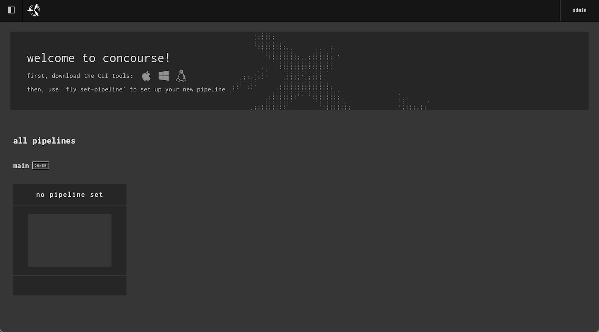

Complete the instructions below to build your own modern application platform, a Heroku-like environment built on Kubernetes which will deploy your code from a Git repository to a production-grade Kubernetes cluster.
This article was first introduced as a lecture at the University of Colorado in the Spring of 2021. The lecture was intended to give students a behind the scenes look at how a modern application platform works.
Given that developer productivity and operator efficiency continues to remain top of mind for both startup and enterprise companies alike, we thought that we would share the lecture as an article. The open source projects included in the article are all part of the Cloud Native Computing Foundation.
Over the past few years, we have observed companies move away from multi-tenant platforms in favor of public cloud providers that host Kubernetes as a service. An obvious driver being freedom of choice around associated components contributing to their infrastructure. Another driver, public cloud providers all agreed on a single container orchestration engine - Kubernetes. In the telecommunications industry, we would call stand-alone Kubernetes basic dial tone. Just enough to establish basic phone service. And similar to voicemail and the ability to make emergency calls, cloud providers have improved upon basic dial tone - resulting in numerous tools and applications that are easy to integrate, intended to significantly increase developer productivity and operator efficiency.
We have also seen a trend toward maintaining a Kubernetes cluster per team or even per application, depending on the size of the application. The movement is possible largely because building a self-service platform has become increasingly easy over the past several years due to the explosion of open source within the platform engineering community. This is commonly referred to as DevOps or DevSecOps.
The steps below will walk you through building a modern application platform, recently referred to as a secure software supply chain.
We’ll need a few things before deploying our application - mainly our dial tone or Kubernetes cluster and a few additional components to complete the infrastructure.
The GitHub repository contains a bin directory with scripts that deploy and configure all the infrastructure components. We’ll also be using Google’s Cloud Platform (GCP). If you haven’t used GCP in the past sign up for a free account.
Below are the main components and the associated software that we will be using.
Let’s get started.
Building software will always be hard. There is inherently no silver bullet. - Fred Brooks
Before we begin let's make sure we have the prerequisites in order. Feel free to skip any of these steps if you already have the prerequisite completed.
Make sure you have a billing account created for your Google Cloud account. Install the Google Cloud SDKthen use the steps below to log in to Google Cloud and set up a project.
gcloud auth logingcloud projects create {your_project_name}gcloud config set project {your_project_name}gcloud services enable cloudbilling.googleapis.comgcloud alpha billing accounts listgcloud alpha billing projects link {your_project_name} --billing-account 0X0X0X-0X0X0X-0X0X0Xgcloud services enable container.googleapis.com
Install kubectl, the Helm CLI,Docker, and yq to your local machine. Make sure that Docker is running before you start the exercises.
Finally, clone the repository to get the scripts we'll need to create our modern application platform.
git clone git@github.com:continuumcollective/freshcloud.git
First we’ll need a few configuration settings for our platform environment. The scripts in this project use values from .env_development.sh file in the project root directory. Let's fill that out first.
Create and then edit .env_development.sh and enter the below values.
touch .env_development.shvi .env_development.sh# Deployment defaults export DOMAIN='yourdomain.com' # Enter the DNS subdomain export EMAIL_ADDRESS='nobody@gmail.com' # E-Mail for CERT registration confirmation export PASSWD='my-pass' # Password that will be used throughout the project # GCP cluster info export GCP_PROJECT_NAME='your-gcp-project' # GCP project name export K8S_CLUSTER_NAME='cluster-name' # Cluster name export REGION='us-central1' # GCP region export ZONE='us-central1-c' # Availability zone
Kubernetes has become the de facto container orchestration engine for deploying and managing distributed systems. Most public cloud providers now include support for running Kubernetes clusters. And as mentioned above, we’ll be using Google Cloud Platform (GCP) for our Kubernetes cluster.
Create a Kubernetes cluster by running the script below from the bin directory.
bash 00-create-cluster.sh gcp
Upon success you will see the below output.
NAME NUM_NODES STATUS
{your_cluster_name} 5 RUNNING
By default when an application or service is deployed to Kubernetes the application is only accessible inside the cluster and is only able to interact with other internal services. This is called east-west traffic.
Our IaaS has created a load-balancer to make our application available outside the cluster. The load-balancer will front traffic to Contour, our ingress controller, allowing us to expose our service or application externally. This is called north-south traffic.
Once deployed, Contour will programmatically update Envoy proxies to control application routing based on annotations in our deployment manifests. We'll configure a wild-card DNS entry for our (sub)domain to point to the load-balancer. This will allow for dynamic application deployments.
From the bin directory, run the below install script for Contour.
bash 01-install-contour.sh
Upon success, the script will output the hostname and public IP address of our load-balancer which we’ll use to access all our external services.
Waiting to get the load-balancer IP.
Create a DNS for *.yourdomain.com to xxx.xxx.xxx.xxx
Next set a wild-card DNS record to point to your load-balancer's IP address by creating an A record entry with your DNS provider. We use DNS Made Easy for managing our DNS records. Use the following command to make sure your DNS is configured correctly before proceeding.
nslookup xxx.yourdomain.com
Our basic dial tone does not have support for managing SSL certificates, so we’ll need a new component to manage the lifecycle of SSL certificates for our cluster. We’ll also need to choose a Certificate Authority (CA) to issue certificates.
For our use case, we’ll configure cert-manager, our certificate management software, to use Let's Encrypt, our certificate authority of choice.
To accomplish this, we’ll give cert-manager a secret destination. Cert Manager will then request a cert from Let's Encrypt. Let's Encrypt will provide us with short lived SSL certs that will be consumed by the Ingress controller and stored as Kubernetes secrets.
bash 02-install-cert-manager.sh
Upon success, you will see the below output.
All pods are running.
clusterissuer.cert-manager.io/letsencrypt-staging created
clusterissuer.cert-manager.io/letsencrypt-prod created
One of the benefits of using cert-manager is that cert-manager will automatically replace each SSL certificate before the certificate expires.
We’ll use Harbor for our image registry. We’ll also use Docker to create the images which we’ll upload to our registry. Harbor will scan each of the Docker images we build for security vulnerabilities, issues, and errors.
Harbor will create two projects for each of the corresponding images below.
Run our next script from the bin directory to create the registry.
bash 03-install-harbor.sh
Upon success, you will see the output below.
All pods are running.
Sleeping while Harbor auth is set up.
Creating: concourse-images in Harbor.
Creating: kpack in Harbor.
url: https://registry.yourdomain.com
username: admin
password: {PASSWORD}
Navigate to the provided URL and log in to Harbor using the provided credentials.
We’ll be using a popular tool named Concourse for continuous delivery. Run our next script from the bin directory to install Concourse in our cluster.
bash 04-install-concourse.sh
Navigate to the provided URL and log in to Concourse using admin as the username and the password that you configured in your environment file.
We’re almost done with all the components for our modern application platform. One last component: kpack, which gives us an implementation of a Cloud Native Buildpack. Installing kpack in our cluster will create the builder objects used by Kubernetes to create application containers.
First install the kpack-cli binary on your local machine.
wget https://github.com/vmware-tanzu/kpack-cli/releases/download/v0.2.0/kp-darwin-0.2.0 -O /usr/local/bin/kpchmod 755 /usr/local/bin/kp
Next deploy the kpack build service. This step will take slightly longer than previous steps as we’ll be building the images locally with Docker.
bash 05-install-kpack.sh
Upon success, you will see the below output.
All pods are running.
clusterstack.kpack.io/base created
clusterstore.kpack.io/default created
Harbor should now look similar to the image below.
We’ve now configured each of the components that contribute to our pipeline. Let’s deploy our application!
Let’s deploy our application. We created a light-weight command line interface (CLI) called freshctl to manage your applications.
Run freshctl from the bin directory to test the CLI.
./freshctl endpoints
The freshctl CLI takes a file or an application configuration as an argument. You'll see an example application called kotlin-ktor-starter in the apps directory. There are only three variables needed to configure our application.
Download the Concourse fly CLI tool from our Concourse installation, substituting your Concourse URL for the URL below.
wget ‘https://ci.yourdomain.com/api/v1/cli?arch=amd64&platform=darwin’ -O /usr/local/bin/flychmod 755 /usr/local/bin/fly
Let’s review the steps the freshclt CLI performs to deploy our application.
OK, let’s deploy the kotlin-ktor-starter app with freshctl's add command.
./freshctl add apps/kotlin-ktor-starter.app
View the build logs by running the below command.
kp build logs kotlin-ktor-starter-image -n kotlin-ktor-starter
Upon success, run the below command and see the application URL.
./freshctl appskotlin-ktor-starter kotlin-ktor-starter.yourdomain.com
That’s a wrap! We hope you enjoyed the article.